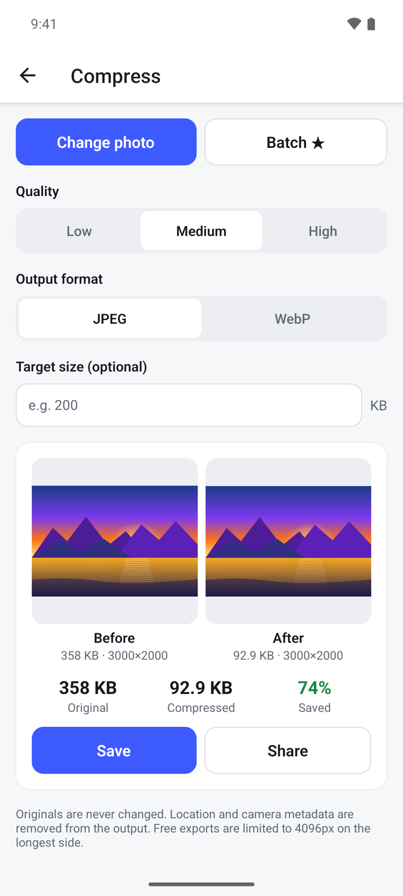

Qué hace
Photo & Image Toolkit reúne cinco herramientas de fotos de uso diario en una sola app: comprimir, redimensionar y recortar, convertir, hacer collages y quitar fondos. Todas las herramientas funcionan en tu móvil y guardan una copia nueva, así que tu foto original nunca se modifica. La app está disponible en 14 idiomas y usa el idioma de tu teléfono.
- Sin cuenta. Las fotos se procesan en tu dispositivo y nunca se suben.
- La app solo ve las fotos que tú eliges.
- Se eliminan la ubicación y los datos de la cámara de las copias que guarda.
- Gratis con anuncios. Una compra única de Premium quita los anuncios y añade el procesamiento por lotes.
Primeros pasos
- Abre Photo & Image Toolkit. La pantalla de inicio muestra las cinco herramientas.
- Toca una herramienta, por ejemplo Compress.
- Toca Select photo y elige una foto. La app no pide acceso a toda tu galería.
- Cuando el resultado esté listo, toca Save para guardarlo como una foto nueva, o Share para enviarlo a otra app.

Comprimir una foto
- En la pantalla de inicio, toca Compress y luego Select photo.
- En Quality, elige Low, Medium o High. Low da el archivo más pequeño.
- En Output format, elige JPEG o WebP.
- Si el archivo debe pesar menos de un tamaño concreto, escríbelo en Target size (optional), en KB.
- Toca Compress. Verás la foto antes y después, con el tamaño original, el tamaño nuevo y cuánto has ahorrado.
- Toca Save o Share.

Si no se puede alcanzar el tamaño objetivo sin perder mucha calidad, la app te lo avisa y te da el resultado más pequeño posible.
Redimensionar, recortar, girar o voltear
- Toca Resize & Crop y luego Select photo.
- En Crop ratio, deja Free o elige una forma fija como 1:1, 4:5 o 16:9.
- Arrastra dentro del recuadro de recorte para moverlo. Arrastra el punto azul de la esquina para hacerlo más grande o más pequeño.
- Toca ⟲ Left o ⟳ Right para girar la foto. Toca un botón Flip para voltearla como en un espejo.
- En Resize, elige Original para mantener el tamaño, Pixels para escribir un ancho, % para escalar por porcentaje, o Presets para tamaños ya preparados para redes sociales y documentos.
- En Format, elige JPEG, PNG o WebP.
- Mira la línea Output para ver el tamaño final y toca Apply.
- Toca Save o Share.

Convertir a JPEG, PNG o WebP
- Toca Convert y luego Select photo. Se pueden abrir fotos HEIC, PNG, WebP y JPEG.
- En Convert to, elige JPEG, PNG o WebP. Una nota breve bajo los botones explica para qué sirve cada formato.
- Para JPEG y WebP, elige una Quality: Low, Medium o High.
- Toca el botón Convert to que aparece al final de la tarjeta, por ejemplo Convert to JPEG.
- Compara el tamaño antes y después, y toca Save o Share.

Si la foto tiene zonas transparentes y eliges JPEG, la app te avisa de que se volverán blancas.
Hacer un collage
- Toca Collage y luego Select photos. Elige de 2 a 9 fotos.
- Para cambiar el orden, toca una foto en la vista previa y después toca la foto con la que quieres intercambiarla.
- En Layout, elige cómo se colocan las fotos. Los diseños marcados con ★ forman parte de Premium.
- En Shape, elige 1:1, 4:5, 9:16 o 16:9.
- Ajusta el Spacing entre fotos, las Corners (Square, Soft o Round) y el color de Background.
- En Format, elige JPEG o PNG.
- Toca Create collage y luego Save o Share.

Quitar un fondo
- Toca Remove Background y luego Select photo. La app recorta el sujeto al instante. Funciona mejor con un sujeto claro: una persona, una mascota o un producto.
- Toca Before y After para comparar el recorte con el original.
- En Background, elige qué va detrás del sujeto:
- Transparent: se guarda como PNG transparente.
- Colour: elige uno de los colores que se muestran.
- Photo: toca Choose background photo y elige otra foto.
- Toca Save o Share.

Con Premium, también puedes poner el sujeto sobre un degradado.
El recorte se hace en tu dispositivo. La primera vez que uses esta herramienta, es posible que el móvil necesite conexión a internet un momento para descargar el modelo de recorte a través de los servicios de Google Play.
Abrir los ajustes
- En la pantalla de inicio, toca Settings arriba a la derecha.
- En Premium, mira si tienes Free o Premium, toca Upgrade to Premium o toca Restore purchases.
- En Privacy, abre la Privacy Policy o los Terms of Use. En algunos países también verás Ad privacy choices, donde puedes cambiar tu consentimiento para los anuncios.
Premium
Premium es un pago único, no una suscripción. Toca ★ Go Premium en la pantalla de inicio, o Upgrade to Premium en Settings. Te ofrece:
- Sin anuncios.
- Procesamiento por lotes con el botón Batch: comprime o convierte hasta 20 fotos a la vez, o recorta el fondo de hasta 10. También puedes redimensionar muchas fotos a la vez.
- Exportación en alta resolución: hasta 8192 px en el lado más largo en lugar de 4096 px, hasta 4096 px en lugar de 2048 px para los recortes de fondo, y collages más grandes.
- Smooth edges para bordes más suaves en los recortes de Remove Background, y plantillas de fondo con degradado.
- Diseños de collage adicionales.
Si ya compraste Premium, toca Restore purchases en Settings o en la pantalla de Premium.
Preguntas
¿Cambia mi foto original? No. Cada herramienta guarda una copia nueva. En Android, las copias van al álbum Photo Toolkit de tu galería.
¿Se suben mis fotos? No. Las cinco herramientas funcionan en tu móvil, también la de quitar fondos.
¿Por qué mi foto guardada tiene menos píxeles que la original? La versión gratuita guarda fotos de hasta 4096 px en el lado más largo, y recortes de fondo de hasta 2048 px. Las fotos más grandes se reducen. Premium aumenta estos límites.
¿Puedo guardar en HEIC? No en Android. Puedes abrir fotos HEIC y convertirlas a JPEG, PNG o WebP.
Quitar fondo muestra un error. ¿Qué puedo hacer? Esta herramienta necesita los servicios de Google Play. Comprueba que tienes conexión a internet y que Google Play está configurado en tu móvil, y vuelve a intentarlo.
Privacidad
Tus fotos se procesan en tu dispositivo y nunca se suben. La versión gratuita muestra anuncios de Google AdMob. Lee la política de privacidad completa.